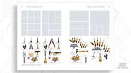

CSS-Tricks
https://css-tricks.com
CSS-Tricks is where folks around the world come to learn about front-end code and everything related to it, including HTML, CSS, and yes, CSS.
フィード

10 Big Ol’ 2027 Black Friday Deals
CSS-Tricks
A big ol' roundup of Black Friday deals on front-end courses from the best independent publishers and educators in the business.10 Big Ol’ 2027 Black Friday Deals originally handwritten and published with love on CSS-Tricks. You should really get the newsletter as well.
1日前

Beyond 12 Columns: Designing Layouts With Personality
CSS-Tricks
Too many websites look alike. They use familiar layouts, repeat the same patterns, and often leave little impression once you’ve moved on. Andy Clarke explores how understanding a company’s story can lead to more distinctive designs, using modular and compound grids to create layouts with character.Beyond 12 Columns: Designing Layouts With Personality originally handwritten and published with love on CSS-Tricks. You should really get the newsletter as well.
2日前

CSS Optimization: Is Using Declarations Just Once (UDJO) Still Effective Today?
CSS-Tricks
Is the technique inspired by the DRY principle by identifying and reducing (if not eliminating) CSS declaration repetition still a relevant optimization strategy?CSS Optimization: Is Using Declarations Just Once (UDJO) Still Effective Today? originally handwritten and published with love on CSS-Tricks. You should really get the newsletter as well.
4日前
CSS-Tricks, Version 20 1
1
CSS-Tricks
Things look a little different around here? I hope so because we just pushed a site redesign! Here's everything new with the 20th(!!) version of CSS-Tricks.CSS-Tricks, Version 20 originally handwritten and published with love on CSS-Tricks. You should really get the newsletter as well.
5日前
RSS Club: CSS-Tricks Redesign Preview
CSS-Tricks
Hey you wonderful RSS subscribers! We just soft-pushed a site redesign and wanted to give ya'll the first heads-up. A full write-up is coming but here are the high-level details.RSS Club: CSS-Tricks Redesign Preview originally handwritten and published with love on CSS-Tricks. You should really get the newsletter as well.
8日前

Taming Typography: Building a Modern CSS Reset
CSS-Tricks
Stu created tidy-typography.css: a style reset for taming typography with modern CSS features for everything from fluid typography and vertical rhythm, to hyphens and variable fonts.Taming Typography: Building a Modern CSS Reset originally handwritten and published with love on CSS-Tricks. You should really get the newsletter as well.
9日前
Smashing AI Conference
CSS-Tricks
The AI 2027 Conference is a live online day for designers and engineers on where AI stands today, what to expect in 2027, and where teams are getting it right.Smashing AI Conference originally handwritten and published with love on CSS-Tricks. You should really get the newsletter as well.
10日前
Re-Implementing :nth-child() With Modern CSS
CSS-Tricks
Combining :nth-child with style queries and sibling-index() to conditionally select child elements.Re-Implementing :nth-child() With Modern CSS originally handwritten and published with love on CSS-Tricks. You should really get the newsletter as well.
11日前
What’s !important #20: GTA 6 Scroll Effects, Scrollspies, random()
CSS-Tricks
This is the final issue of What’s !important on CSS-Tricks.com. The good news is that it’s coming back in an expanded form as the CSS-Tricks newsletter. I had ya there for a second, didn’t I? Sorry, I couldn’t decide whether to trick or treat, so I went for both. Happy HalloweenWhat’s !important #20: GTA 6 Scroll Effects, Scrollspies, random() originally handwritten and published with love on CSS-Tricks. You should really get the newsletter as well.
12日前
The Frankenstein Table
CSS-Tricks
A super scary way to go about tables using other layout techniques, like CSS Grid.The Frankenstein Table originally handwritten and published with love on CSS-Tricks. You should really get the newsletter as well.
16日前
What’s !important #19: CSS Refraction Effects, Scroll State Queries, @custom-media, and More
CSS-Tricks
We’re back! Don't worry, this isn’t a trick (despite what our name suggests!). However, due to the hiatus, we're also a little behind. That’s why this issue of What’s !important is absolutely stacked. All killer, no filler. Here's what you missed.What’s !important #19: CSS Refraction Effects, Scroll State Queries, @custom-media, and More originally handwritten and published with love on CSS-Tricks. You should really get the newsletter as well.
18日前
CSS-Tricks has a new owner!
CSS-Tricks
Yes, I've got the keys to the castle, so to speak. And, even after 12 years of working on the site, I'll admit I'm a little overwhelmed and nervous about that.CSS-Tricks has a new owner! originally handwritten and published with love on CSS-Tricks. You should really get the newsletter as well.
19日前
Let’s Use the Emergent CSS random() Function in all the Browsers
CSS-Tricks
The journey to create a polyfill for the upcoming CSS random() function that works in all browsers.Let’s Use the Emergent CSS random() Function in all the Browsers originally handwritten and published with love on CSS-Tricks. You should really get the newsletter as well.
2ヶ月前
What’s !important #18: <geolocation>, Syntax ::highlight()ing, named-feature(), and More
CSS-Tricks
Well, that’s a wrap. No, not a flex-wrap, but rather today marks a new day, week, month, season, aaaand new edition of What’s important (#18), bringing you the best content that developers have produced over the last couple of weeks or so.What’s !important #18: <geolocation>, Syntax ::highlight()ing, named-feature(), and More originally handwritten and published with love on CSS-Tricks. You should really get the newsletter as well.
2ヶ月前
Creating Web Widgets Using the Document Picture-in-Picture API
CSS-Tricks
The general idea is that we create a Document Picture-in-Picture window (DPIP window), and then we put HTML, CSS, and JavaScript into it.Creating Web Widgets Using the Document Picture-in-Picture API originally handwritten and published with love on CSS-Tricks. You should really get the newsletter as well.
3ヶ月前